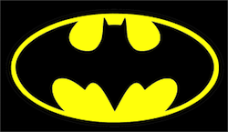

Button
My Superheroes
Batman

Batman is a fictional superhero appearing in American comic books published by DC Comics. The character was created by artist Bob Kane and writer Bill Finger,[4][5] and first appeared in Detective Comics #27 (1939). Originally named the "Bat-Man", the character is also referred to by such epithets as the Caped Crusader, the Dark Knight, and the World's Greatest Detective.
Favorite
Superman
Spiderman